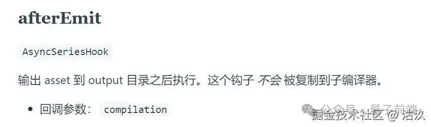
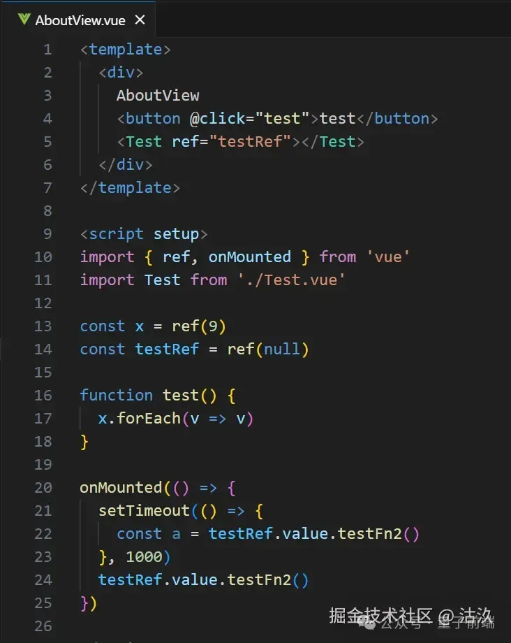
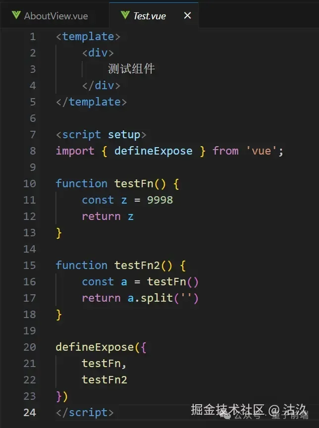
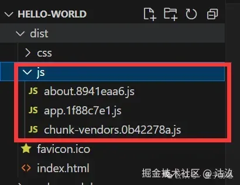
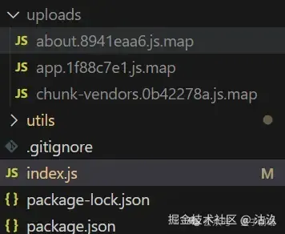
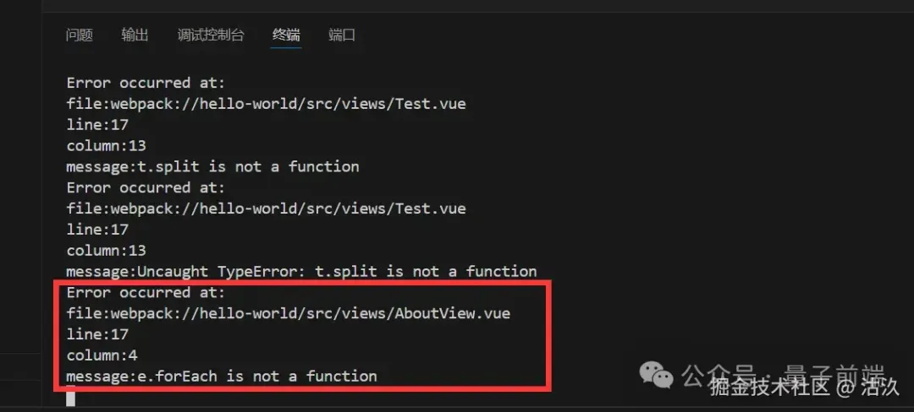
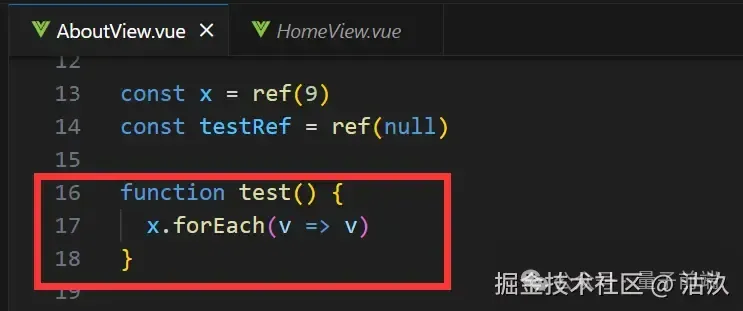

我们在平时的工作中，开发功能的同时不可能把场景考虑的面面俱到，而生产环境往往情况是非常复杂的，用户录入进去的数据总是千奇百怪，那如果遇到问题的话，我们又要如何进行排查呢？总不可能让用户录个屏吧哈哈~所以我们就出现了前端埋点的操作，不过埋点的方向以及文章都挺多的，也都挺复杂的，这篇文章我们就讲一个比较有趣的错误捕获思路。
我们平时在使用框架开发遇到 bug时，比如Vue，如果是在本地环境，我们在控制台可以很容易的找到出现问题的文件，甚至点击进入即可直接定位到我们的文件中对应报错的位置，这样排查问题就比较方便。而在生产环境，我们可以配置 sourcemap，就也能比较方便的定位到问题出现的地方。但这样的话就会出现一个问题，首先上传到服务器的包体积就会因为生成了很多 map 文件而变得很大，其次我们的网站代码会非常容易暴露甚至是直接被调试，而且这样子也仅仅是我们自测的时候去发现问题，无法监测到用户端到底是做了什么操作才出现的问题。
那么，有没有一个方法是可以监控到客户端用户操作时，出现问题的代码位置呢？
综上，我们这次要做的这个工具的目的就比较明确了：
在错误捕获之前，我们先提前了解一个服务端的库——source-map
使用source-map库，我们可以通过向该库暴露出的方法中传入 bug 出现的文件对应的map 文件，以及错误的行数和列数，通过对应的方法解析后，我们可以得到该错误出现的源文件以及具体在源文件中的定位。
至此，我们明确了错误捕获中，我们主要就是想拿四个信息：
那么，我们可不可以设计这样一个流程呢？
在配置文件中将sourcemap的配置打开，从而使得项目打包后会生成map 文件。
通过编写webpack 插件，监听 webpack 打包完成钩子，在打包完成后触发，将生成的map 文件自动上传到我们的服务器上。
然后在前端，通过错误捕获，将报错信息传给我们的服务器，由服务器根据报错信息再结合map 文件，最终解析出我们的报错行数，同时形成日志输出出来并记录下来。
这样的话，我们就可以非常方便的捕获错误，监控生产问题，同时也实现了一个简单的webpack 插件。
onerror
前端的错误捕获我们最常见的当然是window.onerror了，我们可以通过定义window.onerror函数来对全局错误进行捕获。
// main.js
window.onerror = function (message, source, lineno, colno) {
console.log(message);
console.log(source);
console.log(lineno);
console.log(colno);
};
通过window.onerror我们很容易可以拿到我们想要的具体信息。
errorHandler
但window.onerror并不能捕获到框架组件生命周期的错误，所以我们可以再补充一个框架的错误捕获，以 Vue 为例：
// main.js
// ...
const app = createApp(App);
app.use(store).use(router).mount("#app");
app.config.errorHandler = function (err, vm, info) {
console.log(err);
console.log(vm);
console.log(info);
};
我们在 errorHandler 事件中，可以拿到错误对象 err，vue 实例，错误信息。这里我们并不能像上面onerror 错误捕获一样很方便的取出出错的行数和列数，但我们能够拿到一个完整的错误堆栈对象，那么我们就可以对错误对象的堆栈信息进行处理，提取出我们想要的行数和列数。
这里用到了一个堆栈解析工具——StackTrace-Parser
npm install stacktrace-parser
app.config.errorHandler = function (err, vm, info) {
const errInfo = stackTraceParser.parse(err.stack)[0];
const message = err.message; // 错误message
const lineno = errInfo.lineNumber; // 错误行数
const colno = errInfo.column; // 错误列数
const source = errInfo.file; // 错误出现的文件名
// ...
};
补充
错误捕获还有一个onunhandledrejection的事件，用于捕获Promise 类型的错误，但是经过尝试发现不是很好去拿到错误的定位信息，同时，考虑到一般 Promise 我们会使用catch去处理异常的操作，所以这里就暂时不处理这个类型的错误事件了。
至此，我们的捕获相关的逻辑已经完成，剩下的就是如何设计服务端，如何将这些信息传递给服务端并完成解析了。
服务端，我们设计两个接口，一个用于上传 map 文件（upload），一个用于接收错误信息（sendErrorLog）。
上传接口就不多说了，主要就是在前端打包完成之后，服务端接收传过来的map 文件。我们主要看一下接收错误信息的接口逻辑。
const handleErrorMessage = require("./utils/index");
// ...
app.post("/sendErrorLog", (req, res) => {
handleErrorMessage(req.body);
res.send("hello");
});
// utils/index.js
const fs = require("fs");
const { SourceMapConsumer } = require("source-map");
const path = require("path");
// 读取压缩代码和对应的source map
const arr = fs.readdirSync(path.resolve(__dirname, "../uploads"));
const sourceMap = {};
for (let i = 0; i < arr.length; i++) {
fs.readFile(
path.resolve(__dirname, "../uploads", arr[i]),
"utf-8",
function (err, data) {
if (err) {
return err;
}
sourceMap[arr[i]] = data;
}
);
}
module.exports = function handleErrorMessage(message) {
const errorLine = message.lineno;
const errorCol = message.colno;
const jsName = message.source.split("/").pop();
const sourceName = jsName + ".map";
// 服务器因为是一直启动状态，所以如果是在启动后最新上传的文件，则需要事实进行读取对应的map文件
if (!sourceMap[sourceName]) {
sourceMap[sourceName] = fs.readFileSync(
path.resolve(__dirname, "../uploads", sourceName),
"utf-8"
);
}
SourceMapConsumer.with(sourceMap[sourceName], null, (consumer) => {
// 在源码堆栈中定位报错位置
const originalPosition = consumer.originalPositionFor({
line: errorLine,
column: errorCol,
});
console.log("Error occurred at:");
console.log("file:" + originalPosition.source);
console.log("line:" + originalPosition.line);
console.log("column:" + originalPosition.column);
console.log("message:" + message.message);
});
};
整体的思路就是：
这里考虑到一般服务器我们都是一直启动的状态，所以在调用解析逻辑之前，先判断souceMap 数据是否已经读取出来，如果没有读取出来，再同步去读取，之后再去解析错误信息。
接口已经有了，这里我们再回过头完善一下前端的逻辑。
首先，我们根据前面对错误捕获的了解，完成一下错误上传的逻辑，：
// main.js
import axios from 'axios'
import * as stackTraceParser from 'stacktrace-parser';
...
// 生产环境再去做上传错误处理
if (process.env.NODE_ENV == "production") {
// 捕获框架内部错误
app.config.errorHandler = function (err, vm, info) {
const errInfo = stackTraceParser.parse(err.stack)[0]
const message = err.message
const lineno = errInfo.lineNumber
const colno = errInfo.column
const source = errInfo.file
axios
.post("http://127.0.0.1:3000/sendErrorLog", {
message,
lineno,
colno,
source,
})
.then((data) => {
console.log(data);
});
};
// 捕获js报错
window.onerror = function(message, source, lineno, colno) {
axios
.post("http://127.0.0.1:3000/sendErrorLog", {
message,
lineno,
colno,
source,
})
.then((data) => {
console.log(data);
});
}
}
然后，我们开始实现 map 文件上传的逻辑。
我们先去找一个 webpack 打包完成输出文件后的钩子——afterEmit。
在这个钩子触发时，说明打包文件已经被输出出来了，我们可以去读取打包文件的js 文件夹，从中过滤出map 文件，上传至服务器，同时在打包文件中将 map 文件进行删除操作。
const pluginName = "SendMapWebpackPlugin";
const fs = require("fs");
const axios = require("axios");
const path = require("path");
class SendMapWebpackPlugin {
apply(compiler) {
const outputPath = compiler.options.output.path;
compiler.hooks.afterEmit.tap(pluginName, (compilation) => {
console.log("webpack 构建");
console.log(process.env.NODE_ENV);
if (process.env.NODE_ENV == "production") {
fs.readdir(outputPath + "/js", function (err, data) {
if (data) {
data.forEach((v) => {
// 如果读取到的数据是以map结尾，则将map文件上传到服务器
if (v.endsWith(".map")) {
const file = fs.readFileSync(
path.resolve(__dirname, "../dist/js", v),
"utf-8"
);
axios({
url: "http://127.0.0.1:3000/upload",
method: "post",
data: { file, fileName: v },
headers: {
"Content-Type": "application/octet-stream",
},
})
.then((res) => {
console.log("success");
fs.rm(path.resolve(__dirname, "../dist/js", v), (err) => {
if (err) {
console.log(err);
return;
}
console.log("delete success");
});
})
.catch((err) => {
console.log(err);
});
}
});
}
});
}
});
}
}
// ...
逻辑写完了，我们在前端代码中留下一些 bug 来测试一下效果。
 然后，我们执行npm run build打包操作。
可以看到我们打包完成后的dist 文件夹中，已经没有了map 文件：
而在服务端，我们接收到了这些map 文件。
上传 map 文件逻辑没有问题，接下来，我们看一下错误解析逻辑。
我们可以在本地安装一个 serve 包，便于我们快捷的以 dist 文件夹为基础起一个小型服务器。
将 dist 文件夹在终端中打开，执行执行serve -p 8080。
点击按钮触发 bug，我们可以看到错误已被成功捕获，并将对应的信息通过接口传递给服务端。
 在服务端的输出中，我们可以看到已对错误进行了解析，错误发生的定位信息已经输出出来了，对照前端文件中错误发生的位置也是没有问题的~
Demo: https://github.com/GuJiugc/errorAnalysisJueJinDemo/tree/main